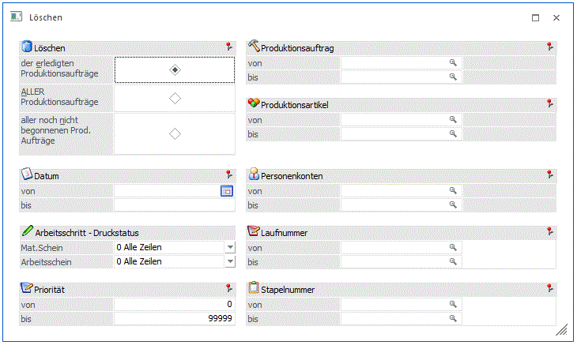
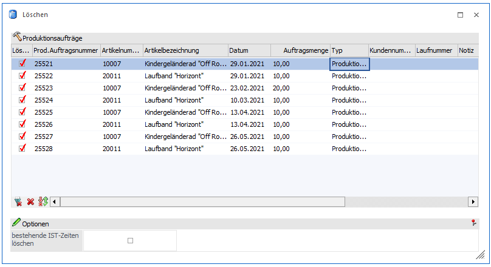

Soll ein Produktionsauftrag gelöscht werden, ist der Programmpunkt
1 WinLine PPS
1 Stammdaten
1 Eintrag löschen
anzuwählen.

Über die folgenden Kriterien kann eingegrenzt werden, welche Produktionsaufträge zum Löschen vorgeschlagen werden sollen.
Löschen
Über den Bereich "Löschen" wird der Status der Produktionsaufträge selektiert, die gelöscht werden sollen.
Achtung
Alle weiteren Eingrenzungen (z.B. Datum oder Produktionsartikel) beziehen sich nur auf die Produktionsaufträge, die an dieser Stelle gewählt wurden.
Es gibt folgende Einstellungsmöglichkeiten:
ü der erledigten
Produktionsaufträge
Es werden alle erledigten Produktionsaufträge zum Löschen
vorgeschlagen.
Hinweis
Wenn ein Produktionsauftrag abgeschlossen und damit erledigt wurde, dann verschwindet dieser nicht aus der Datenbank, sondern bleibt dort weiterhin bestehen.
Über diese Selektion können solche Aufträge eingegrenzt und anschließend gelöscht werden um die Kapazität der Datenbank zu verringern.
ü ALLER Produktionsaufträge
Es
werden alle Projekte, unabhängig davon, ob diese Aufträge bereits erledigt,
bereits begonnen aber noch nicht erledigt, oder noch nicht begonnen sind, zum
Löschen vorgeschlagen.
ü aller noch nicht begonnenen Prod.
Aufträge
Es werden alle noch nicht begonnenen Projekte zum Löschen
vorgeschlagen.
Ø Datum von / bis
An dieser Stelle kann eine Eingrenzung aufgrund des Produktionsauftragsdatums erfolgen.
Arbeitsschritt - Druckstatus
Ø Materialentnahmeschein
Mit den folgenden Optionen können Projekte nach dem Druckstatus des Materialentnahmescheines selektiert werden:
ü 0 Alle Zeilen
Arbeitsschritte
werden unabhängig vom Druckstatus des Materialentnahmescheins vorgeschlagen.
ü 1 muss gedruckt sein
Nur jene
Arbeitsschritte werden vorgeschlagen, für die ein Materialentnahmeschein
gedruckt wurde.
ü 2 darf nicht gedruckt sein
Nur
jene Arbeitsschritte werden vorgeschlagen, für die noch kein
Materialentnahmeschein gedruckt wurde.
Ø Arbeitsschein
Mit den folgenden Optionen können Projekte nach dem Druckstatus des Arbeitsscheines selektiert werden:
ü 0 Alle Zeilen
Arbeitsschritte
werden unabhängig vom Druckstatus des Arbeitsscheins vorgeschlagen.
ü 1 muss gedruckt sein
Nur jene
Arbeitsschritte werden vorgeschlagen, für die ein Arbeitsschein gedruckt wurde.
ü 2 darf nicht gedruckt sein
Nur
jene Arbeitsschritte werden vorgeschlagen, für die noch kein Arbeitsschein
gedruckt wurde.
Ø Produktionsauftrag von/bis
An dieser Stelle kann eine Eingrenzung aufgrund der Produktionsaufträge selber vorgenommen werden.
Ø Produktionsartikel von/bis
An dieser Stelle kann eine Selektion aufgrund des zu produzieren Artikels erfolgen.
Ø Personenkonten von/bis
An dieser Stelle kann eine Selektion aufgrund des Personenkontos vorgenommen werden.
Ø Laufnummer von/bis
An dieser Stelle kann eine Eingrenzung aufgrund der Laufnummer erfolgen.
Ø Priorität
An dieser Stelle kann eine Eingrenzung aufgrund der Priorität vorgenommen werden.
Ø Stapelnummer
An dieser Stelle kann eine Eingrenzung aufgrund von Stapelnummern erfolgen.
Tabelle der selektierten Produktionsaufträge

Ø bestehende Ist-Zeiten löschen
Bei Aktivierung der Checkbox werden auch die bereits erfassten Ist-Zeiten der Produktionsaufträge gelöscht.
Die Selektion der zu löschenden Aufträge über das Setzen bzw. Entfernen der Haken verfeinert werden.
Tabellenbuttons
Ø Ende
Der Programmbereich wird verlassen.
Ø Löschen
Durch Drücken dieses Buttons und Bestätigung der Sicherheitsabfrage werden die selektierten Produktionsaufträge gelöscht.
Ø Zurück
Durch Anklicken dieses Buttons wird wieder zurück in den Selektionsbereich gewechselt.
Ø Bestellverfolgung
Durch Anklicken dieses Buttons wird für den markierten Produktionsauftrag die "Auftragsverfolgung" aufgerufen. Diese Auswertung zeigt dabei die Verknüpfungen zu Kundenaufträgen, Lieferbestellungen und andere Produktionsaufträgen auf.
Ø alle Zeilen selektieren
Durch Anklicken dieses Buttons werden alle Einträge selektiert.
Ø keine Zeilen selektieren
Durch Anklicken dieses Buttons werden alle bisher getroffenen Selektionen aufgehoben. Alle Einträge werden deselektiert.
Ø Selektion umkehren
Durch Anklicken dieses Buttons werden alle vorgenommenen Selektionen in das Gegenteil umgewandelt - selektierte Produktionsaufträge werden deselektiert, deselektierte Aufträge werden selektiert.
Ø Ausgabe Excel
Durch Anwahl des Buttons "Ausgabe Excel" wird der Inhalt der Tabelle an Microsoft Excel übergeben.
Ø Tabelleneinstellungen speichern
Die Spalten einer Tabelle können grundsätzlich an beliebige Positionen verschoben, bzw. in der Breite entsprechend angepasst werden. Durch Anwahl des Buttons "Tabelleneinstellungen speichern" werden die Einstellungen benutzerspezifisch gespeichert und bei dem nächsten Aufruf des Programmpunktes wieder vorgeschlagen.
Ø Gesamteinstellungen speichern…
Im Gegensatz zu "Tabelleneinstellungen speichern" können mit "Gesamteinstellungen speichern" mehrere Tabellenaufbauten gespeichert und nach Wunsch geladen werden. Zusätzlich werden Sonderfunktionen der Tabelle (z.B. "Spalte gruppieren") ebenfalls bei der Speicherung bedacht.